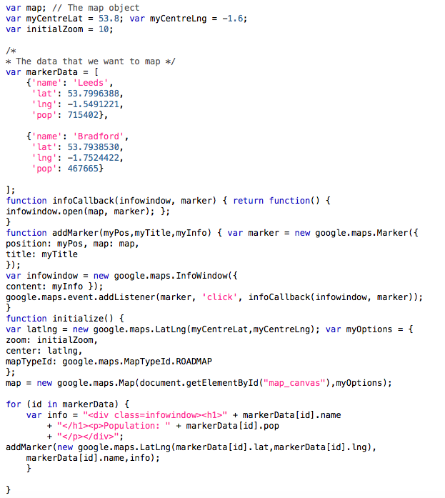
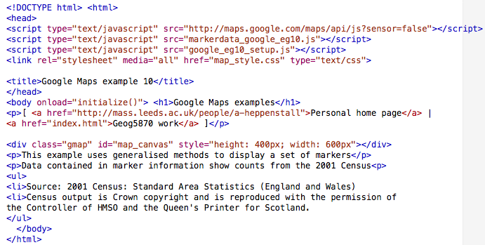
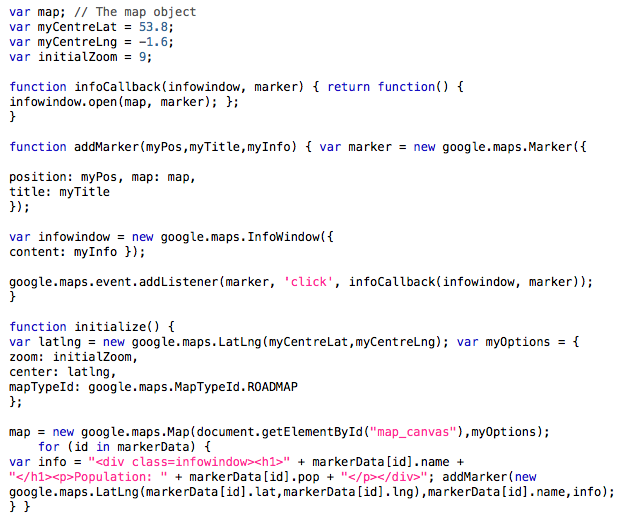
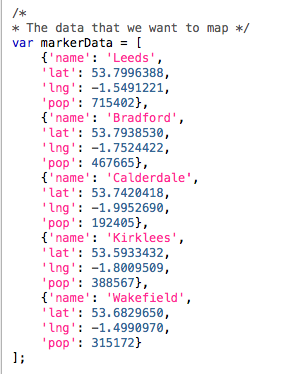

In theory we can now create maps with numerous markers (although there are
limits to how many can be usefully applied before they need to be clustered).
However, you will notice a degree of redundancy in the JavaScript code: we have
two sets of lines (for each marker) that are almost identical. If we were to
add a large number of markers, the code would be very repetitive, a clear sign
that we should generalise the method used. The following figure shows a revised version of
the above code. We have added an additional function called
addMarker(). This takes three parameters: a position (which must
be a LatLng object), a title and some informational text. Having
got these, the function creates a marker and an infowindow in the same manner
as in the previous example, substituting in the parameters of the function
where previously we had hard-coded values.
Please note that the formatting has been compacted in the figure below to allow you to see the addMarker() function.
The code for this example is HERE.
The main initialize() function has also been updated. Instead of the full process of creating a marker that we used previously,
we have replaced this with a line that creates some content to be displayed in
the infowindow, and then a call to our new addMarker() function.
We have removed several lines of identical code, although the lines creating
the two markers are still quite similar, suggesting that the process can be
further generalised.
The next example shows a further revision of this example. There are two significant changes. Firstly, we have added a new array called markerData near the top of the code, and secondly we have added a loop structure that uses this data near the end of the code. The data array is constructed using the [] syntax to declare an array. As shown it consists of two entries. Each entry is an object, declared using the JSON {} notation as a series of key:value pairs. Four properties are defined in each object - a name, a latitude, a longitude and a population count. Note that we (may) want to use the population as a numeric value so it is written as a number (without a ',' separator for the thousands).

The code for this example is HERE.
At the end of this revised code we have added a new loop
structure. This is a for loop, but a different type to that
illustrated in the introduction to JavaScript material. In this style, the
generic form is for (variable in object)
{statement}. The loop cycles through each element of
object (often an array) and carries out statement. In each
iteration, variable will allow us to access members of the object. In
this case, id acts as an index value for entries in the array
markerData. We do not need to know or worry about how many entries
there are in object - the for loop looks after this for us.
This approach allows us to refer to values using standard notation, for
example markerData[id].name is the value of the property
name for the idth element of
the array markerData. In the body of the loop, we construct a
version of the variable info, joining together strings with values
from the data array. We then call the addMarker() function,
supplying a new LatLng object (declared using lat and
lng values from our data array), the name value and
the new info string.
Adding additional markers can now be done solely by extending the markerData array with new entries. We can also revise the page structure slightly to move the data into a separate file, thus separating the page layout (the HTML document), the map construction code (the map_setup file) and the map content (the marker data). This has been done in the following files:
The first file shown is google_eg10.html, the HTML page that hosts our map. It is largely the same as our previous examples, with the important exception that we have added another script tag in the HEAD section, to load the file markerdata_google_eg10.js. We have also modified the page text to include citation information for the data used, following the wording shown in https://www.census.ac.uk/guides/citing.aspx.

The second file shown is map_setup_google_eg10.js. Again, this is largely the same as in our previous example; the only difference is that we have removed the declaration of the markerdata array from this file. Instead, this array is declared in a separate file, markerdata_google_eg10.js. The format is the same as before; here it has been extended to include 3 other markers (and thus shows all districts in West Yorkshire).


The final file shown is a revised version of map_style.css. This
has been expanded to include some styles for the infowindow class.
The first new entry draws a border around the window, and the second one
illustrates the way in which we can supply an alternate style for H1 heading
elements inside a division of a given class (in this case, infowindow). These
styles are probably not what you would want in practice, and are simply shown
to illustrate the way that styles can be applied.